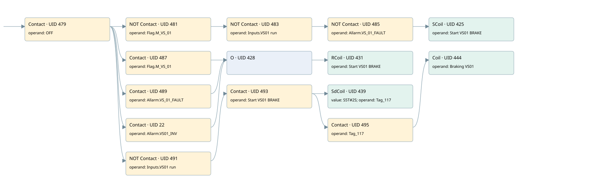

vs01 brake (off)
motors 1 · 검색 색인 순서 15 · 원본 내부 NID 추정 14
백업 PLF 원본의 2791450 바이트 위치에서 복원한 XML. 검색 문서 1944의 객체 키 161022009611000000000000와 연결했다. 이름 해석 15/15개. 남은 RefId는 상수 또는 미해석 참조다.
연결 구조 다시 그리기
원본 Part/PCon/Wire를 이용한 연결도다. TIA 화면의 래더 배치 또는 실행 결과를 재현한 그림은 아니다. 핀 연결은 아래 표와 원본 XML을 기준으로 읽는다. 노드 위에 마우스를 두면 피연산자 이름을 볼 수 있다.

접점·코일·블록과 피연산자
| Part UID | Gate | Negated 핀 | 연결 피연산자 |
|---|---|---|---|
| 479 | Contact | operand = OFF | |
| 481 | Contact | operand | operand = Flag.M_VS_01 |
| 483 | Contact | operand | operand = Inputs.VS01 run |
| 485 | Contact | operand | operand = Allarm.VS_01_FAULT |
| 425 | SCoil | operand = Start VS01 BRAKE | |
| 487 | Contact | operand = Flag.M_VS_01 | |
| 489 | Contact | operand = Allarm.VS_01_FAULT | |
| 22 | Contact | operand = Allarm.VS01_INV | |
| 428 | O | ||
| 431 | RCoil | operand = Start VS01 BRAKE | |
| 491 | Contact | operand | operand = Inputs.VS01 run |
| 493 | Contact | operand = Start VS01 BRAKE | |
| 439 | SdCoil | value = S5T#2S; operand = Tag_117 | |
| 495 | Contact | operand = Tag_117 | |
| 444 | Coil | operand = Braking VS01 |
접점 경로를 펼친 조건식
Contact·O/A·비교기의 원본 연결을 읽기 쉽게 펼친 보조 해석이다. POWER는 전원 레일 시작을 뜻한다. 호출 블록·에지·타이머의 내부 동작과 다중 쓰기 순서는 이 표로 실행 검증하지 않았다. 미해석 핀과 RefId는 원문 연결표에서 확인한다.
| UID | 동작 | 대상 | 원본 접점 경로 | 내용 |
|---|---|---|---|---|
| 425 | SCoil | Start VS01 BRAKE | (((OFF AND NOT [Flag.M_VS_01]) AND NOT [Inputs.VS01 run]) AND NOT [Allarm.VS_01_FAULT]) | 조건 성립 시 Set |
| 431 | RCoil | Start VS01 BRAKE | ((OFF AND Flag.M_VS_01) OR (OFF AND Allarm.VS_01_FAULT) OR (OFF AND Allarm.VS01_INV)) | 조건 성립 시 Reset |
| 439 | SdCoil | Tag_117 | ((OFF AND NOT [Inputs.VS01 run]) AND Start VS01 BRAKE) | 시간 동작 SdCoil; 타이머 의미 추가 확인 / 시간 인자 S5T#2S |
| 444 | Coil | Braking VS01 | (((OFF AND NOT [Inputs.VS01 run]) AND Start VS01 BRAKE) AND Tag_117) | 조건에 따른 Coil 기록 |
원본 배선 연결
| Wire UID | 동일 Wire 연결 끝점 |
|---|---|
| 497 | Powerrail {} ↔ Part 479.in |
| 459 | ORef 445 (OFF) ↔ Part 479.operand |
| 480 | Part 479.out ↔ Part 481.in ↔ Part 487.in ↔ Part 489.in ↔ Part 22.in ↔ Part 491.in |
| 460 | ORef 446 (Flag.M_VS_01) ↔ Part 481.operand |
| 482 | Part 481.out ↔ Part 483.in |
| 461 | ORef 447 (Inputs.VS01 run) ↔ Part 483.operand |
| 484 | Part 483.out ↔ Part 485.in |
| 462 | ORef 448 (Allarm.VS_01_FAULT) ↔ Part 485.operand |
| 486 | Part 485.out ↔ Part 425.in |
| 464 | ORef 449 (Start VS01 BRAKE) ↔ Part 425.operand |
| 465 | ORef 450 (Flag.M_VS_01) ↔ Part 487.operand |
| 488 | Part 487.out ↔ Part 428.in1 |
| 466 | ORef 451 (Allarm.VS_01_FAULT) ↔ Part 489.operand |
| 490 | Part 489.out ↔ Part 428.in2 |
| 21 | ORef 23 (Allarm.VS01_INV) ↔ Part 22.operand |
| 24 | Part 22.out ↔ Part 428.in3 |
| 467 | Part 428.out ↔ Part 431.in |
| 469 | ORef 452 (Start VS01 BRAKE) ↔ Part 431.operand |
| 470 | ORef 453 (Inputs.VS01 run) ↔ Part 491.operand |
| 492 | Part 491.out ↔ Part 493.in |
| 471 | ORef 454 (Start VS01 BRAKE) ↔ Part 493.operand |
| 494 | Part 493.out ↔ Part 439.in ↔ Part 495.in |
| 472 | ORef 455 (S5T#2S) ↔ Part 439.value |
| 473 | ORef 456 (Tag_117) ↔ Part 439.operand |
| 474 | ORef 457 (Tag_117) ↔ Part 495.operand |
| 496 | Part 495.out ↔ Part 444.in |
| 476 | ORef 458 (Braking VS01) ↔ Part 444.operand |
식별자 해석 근거 15개
| ORef UID | RefId | 이름 | IdentXmlPart 파일 | 해석 방법 |
|---|---|---|---|---|
| 445 | 33 | OFF | 0602-IdentXmlPart.xml | UID/RID + search-text + NID agreement |
| 446 | 72 | Flag.M_VS_01 | 0604-IdentXmlPart.xml | UID/RID + search-text + NID agreement |
| 447 | 224 | Inputs.VS01 run | 0604-IdentXmlPart.xml | UID/RID + search-text + NID agreement |
| 448 | 71 | Allarm.VS_01_FAULT | 0604-IdentXmlPart.xml | UID/RID + search-text + NID agreement |
| 449 | 74 | Start VS01 BRAKE | 0602-IdentXmlPart.xml | UID/RID + search-text + NID agreement |
| 450 | 72 | Flag.M_VS_01 | 0604-IdentXmlPart.xml | UID/RID + search-text + NID agreement |
| 451 | 71 | Allarm.VS_01_FAULT | 0604-IdentXmlPart.xml | UID/RID + search-text + NID agreement |
| 23 | 207 | Allarm.VS01_INV | 0604-IdentXmlPart.xml | UID/RID + search-text + NID agreement |
| 452 | 74 | Start VS01 BRAKE | 0602-IdentXmlPart.xml | UID/RID + search-text + NID agreement |
| 453 | 224 | Inputs.VS01 run | 0604-IdentXmlPart.xml | UID/RID + search-text + NID agreement |
| 454 | 74 | Start VS01 BRAKE | 0602-IdentXmlPart.xml | UID/RID + search-text + NID agreement |
| 456 | 77 | Tag_117 | 0602-IdentXmlPart.xml | UID/RID + search-text + NID agreement |
| 455 | 76 | S5T#2S | 0606-IdentXmlPart.xml | literal candidate: UID/RID/NID + nearby named declarations + search-text agreement |
| 457 | 77 | Tag_117 | 0602-IdentXmlPart.xml | UID/RID + search-text + NID agreement |
| 458 | 78 | Braking VS01 | 0602-IdentXmlPart.xml | UID/RID + search-text + NID agreement |
검색 코드 보조 자료
참조 명칭을 찾기 위한 자료이며 실행 순서나 AND/OR 관계는 위 연결표로 확인한다.
"off" "flag".m_vs_01 "inputs"."vs01 run" "allarm".vs_01_fault "start vs01 brake" "flag".m_vs_01 "start vs01 brake" "allarm".vs_01_fault "allarm".vs01_inv "inputs"."vs01 run" "start vs01 brake" "tag_117" s5t#2s "tag_117" "braking vs01"